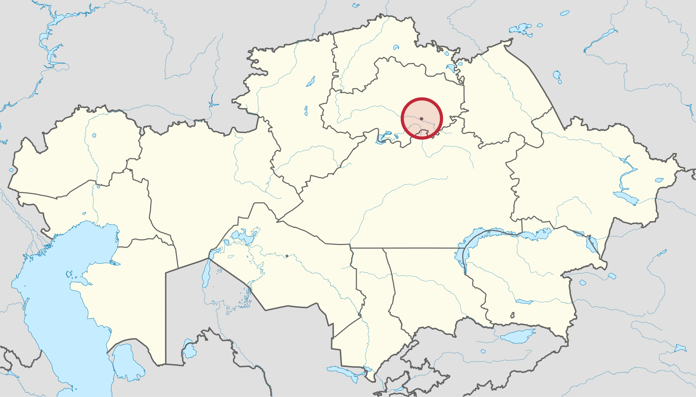
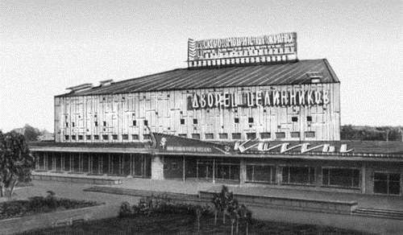
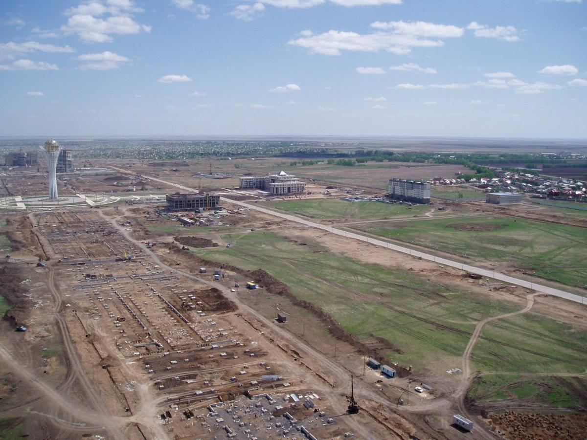
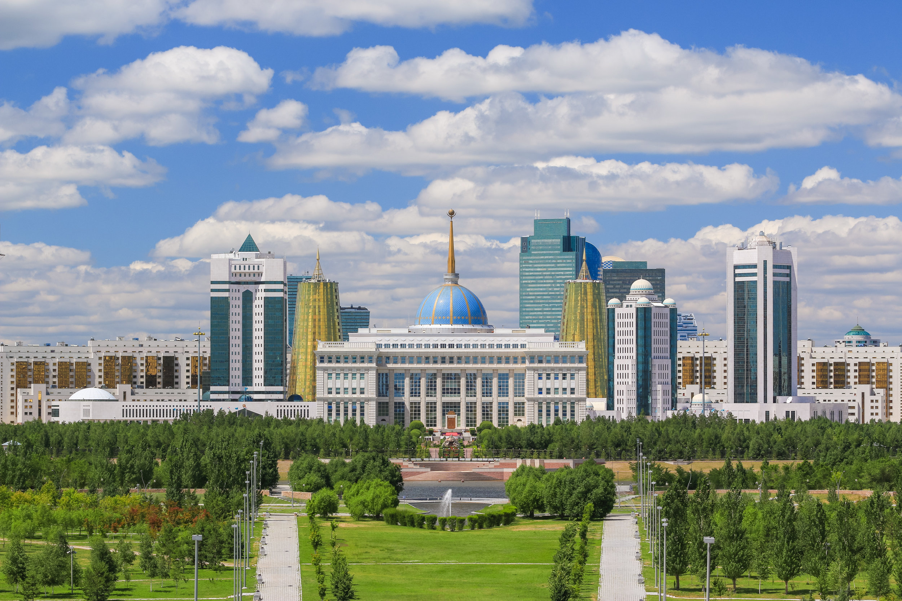

Welcome to Nur-Sultan!
History

Akmolinsk received the status of a city in 1862. Later, as the capital of the country, it switched multiple names from Akmolinsk to Tselinograd and Astana. Today it is Nur-Sultan. The city received the status of the capital of Kazakhstan on December 10, 1997.
The city lies on the banks of the Ishim River which divides the city into two parts. The locals say that they live on the right or left bank of the city. In 2017, the population of the city exceeded 1 million people. Now the number of residents amounts to 1.13 million.
Previously, the territory of the current capital used to be a hub for the passage of caravan routes. In the old days, caravans on camels transported goods from China to Europe and back.

Let’s look at the very long history of the capital of Kazakhstan. As a result of excavations on the territory of the capital, artifacts dating back to the Bronze Age, the Early Iron Age and the Middle Ages were discovered. In 2001 and 2005, the Kuygenzhar burial grounds of the Bronze Age and the Early Iron Age were investigated. In 2007, the Royal mound on Syganak Street was partially investigated. This street bears the name of Shamshi Kaldayakov today and is located in the immediate vicinity of the Palace of Independence.
After the expansion of the administrative borders of Astana, a settlement of farmers was discovered on the territory of the village of Bozok, as evidenced by the remains of irrigation ditches within the area of 30 hectares.
Initially, the settlement existed in the 7-8th centuries, but later was abandoned. Then, the settlement was re-inhabited in the 10-11th centuries, abandoned again, and then restored in the 12-14th centuries.
When the city was known as Tselinograd, it was the center of the Virgin Lands campaign, that is, the development of uncultivated agricultural land. A lot of agricultural machinery was produced in the city. After Kazakhstan had gained independence, it was named Akmola and was then the regional center. And in 1998, it was renamed Astana, which in Kazakh means simply “capital city”.
After the First President of the country, Nursultan Nazarbayev, resigned from his post in March 2019, the city was renamed Nur-Sultan by a decision of the parliament.

Nur-Sultan leads the country in terms of construction rates. One fifth of all residential real estate commissioned in Kazakhstan in 2009 was located in Astana. For more than five years, the city has been the leader in commissioning of residential buildings.
The industrial production of the city mainly includes building materials, food/beverages and mechanical engineering. Nur-Sultan occupies a leading position in Kazakhstan in the production of construction metal products, ready-to-use concrete and construction products made of concrete. Also, the share of the city in the production of metal structures, radiators, central heating boilers and lifting and transport equipment is relatively high.
A special “Astana-new city” economic zone is operating here to attract investors and develop new competitive industries. The advantage of the special economic zone is the presence of a special legal regime providing for tax and customs benefits. Various projects are being implemented on the territory of the special economic zone.

The development of the city is mainly oriented toward creating a competitive economy with a high share of innovative products in the combined volume of production, developed manufacturing industries. There are many small and medium-sized enterprises in the city. Those interested in entrepreneurial activity have no problems in obtaining loans for these purposes.
Mayor of the Yessil district of the city of Nur-Sultan, Berik Dzhakenov, says that back in the day the territory of this district was just one big steppe. Now it has a Botanical Garden, and the main mosque of the city is also being built here. The governor of the district is working very hard. During his time in office, five parks, 38 small and two large green streets were opened.
Link to the original source